原文连接:https://www.cnblogs.com/Java3y/p/12067199.html
前言
只有光头才能变强。
文本已收录至我的GitHub精选文章，欢迎Star：https://github.com/ZhongFuCheng3y/3y
在周六的晚上，我日常去到公司写文章。想写一篇程序员常浏览的网站，刚好同事在我后面看我在干什么。于是我就对他进行了采访，问了一下他常去的网站有哪些。
这次我采访的是鸡蛋，他跟我一样大，但是技术比我优秀实在太多太多了。我还在看技术怎么用的时候，鸡蛋已经在想为什么这项技术要这样设计了。
鸡蛋问过我的问题，有兴趣的同学可以在评论区解答一下：
- 三歪，你知道什么是fail-fast机制吗？这机制有什么用？HashMap会有fail-fast机制吗？那Hashtable和ConcurrentHashMap有吗？如果ConcurrentHashMap没有，那为什么ConcurrentHashMap没有呢？为什么要这样设计呢？
- HashMap可以插入null值吗？那Hashtable可以插入吗？ConcurrentHashMap呢？为什么他们的设计不一样呢？
我会尽量还原采访的场景。
鸡蛋，你平时都逛些什么网站啊？
鸡蛋：我平时逛的网站有很多啊，比如我就经常去逛GitHub。
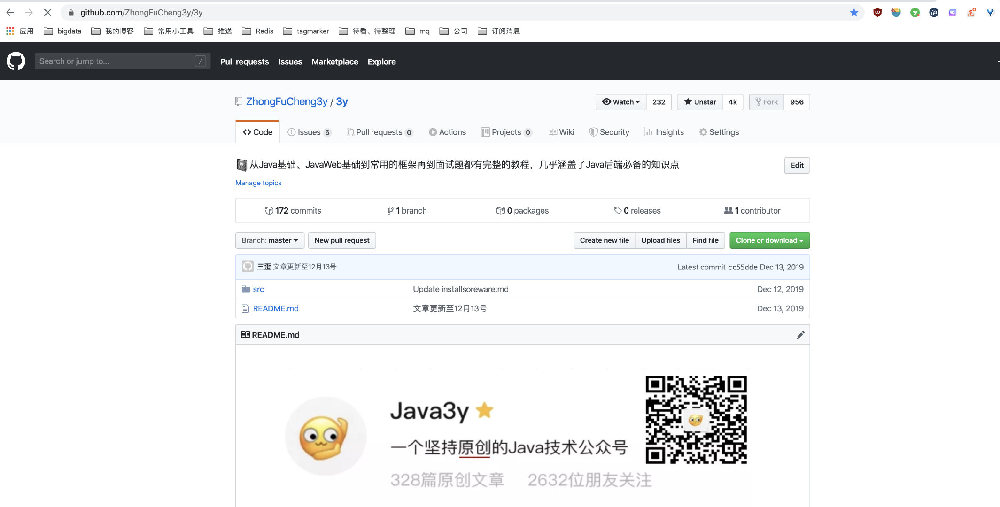
Q：那你GitHub会去怎么看啊？平时用模块哪些比较多？
鸡蛋：我什么都逛的啊，我平时学什么就去里边看什么。比如我最近在学Vue，我就会在GitHub里边搜Vue的一些项目，或者我找相关的工具的时候也会在里边搜。
Q：除了GitHub还有什么常逛的？
鸡蛋：掘金和思否是我逛得比较多的博客网站了，我觉得里边的质量都还行。就是敖丙那个逼天天霸着排行榜（我都会举报他 ，他没什么内容，没什么深度，就是一个营销号。 哈哈哈哈哈）
三歪：我知道你经常看掘金，那你为什么喜欢思否呢？
鸡蛋：我觉得思否的布局和文章都很漂亮，很美观，看起来舒服。内容也有点深度，还行。
掘金：
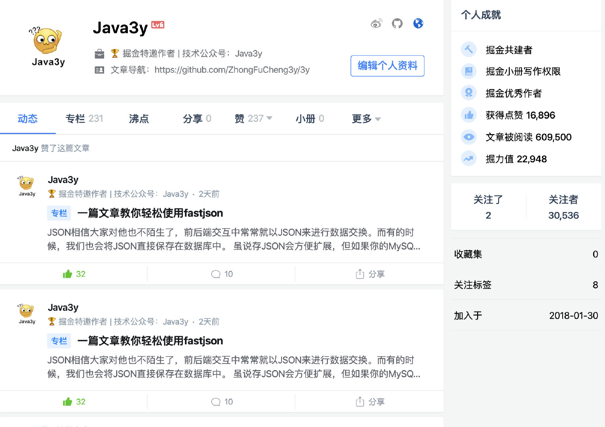
思否：
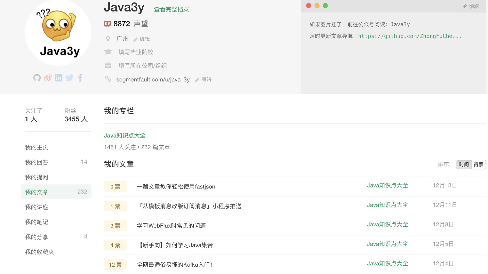
三歪注：鸡蛋一般会看原理性的东西，很少会看简单实现的。一般鸡蛋朋友圈转发的文章，我都看不懂。深度和广度都比不上。
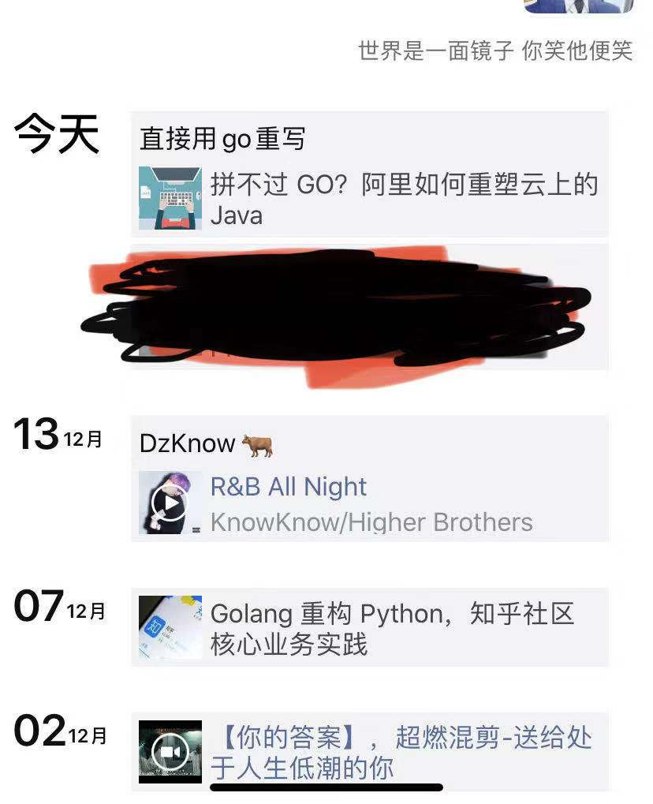
Q:还有其他网站吗？
鸡蛋：对，我平时还喜欢看36氪，每天早上吃早餐的时候就会打开36氪看一下。一般我会看科技类的资讯，了解一下科技新闻和前沿。
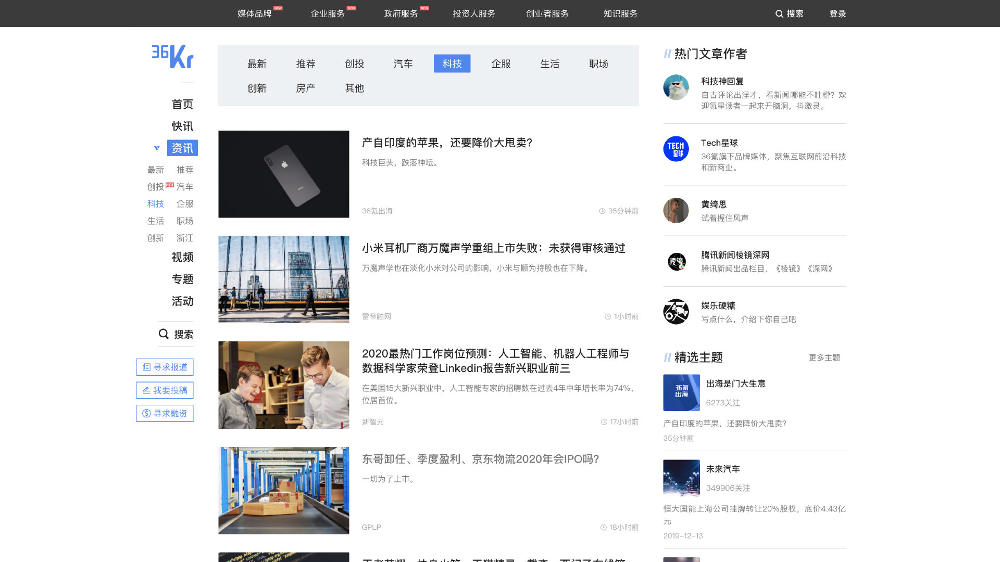
Q：除了36氪还有其他吗？上面好像还不是很多啊，你平时逛应该不止这些吧？
鸡蛋：我平时也会找点资源的。
鸡蛋：比如我会上 http://www.java1234.com/里边找一些电子书和文档，我觉得还行，就是广告有点多。话说你写这类的网站，你的人会不会觉得你在打广告？
三歪：没事，应该不会
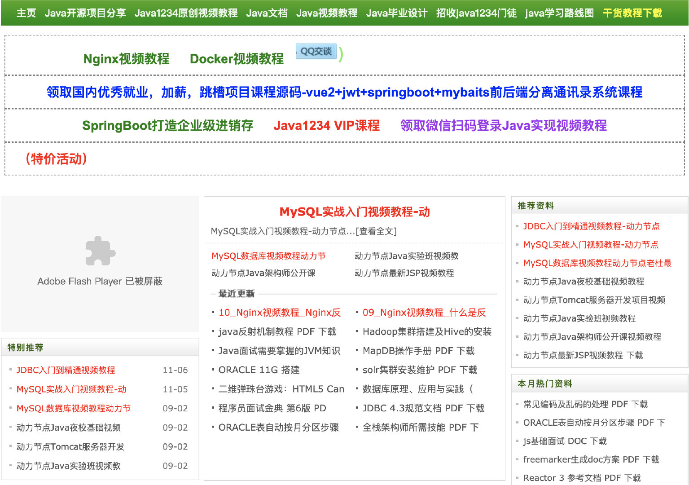
还有平时我也会搜一些电影的资源，我喜欢用百度网盘搜索网站来搜。
三歪：为什么喜欢在网盘里边搜呢？我一般都是去搜种子，然后在迅雷下载。
鸡蛋：百度网盘的更新快啊，比如我之前看《小丑》的电影，应该是百度网盘的更新最快的了。话说我也想搞一个百度网盘的搜索工具，看起来还行。
三歪：那你平时用哪个网站来搜索网盘的资源比较多啊？
鸡蛋：我就去知乎搜一下：“百度网盘搜索排行榜”，一般用前几个，我就能搜出我想要的东西了。具体哪个网站我就记不清了，我能搜出来的东西就不会记。
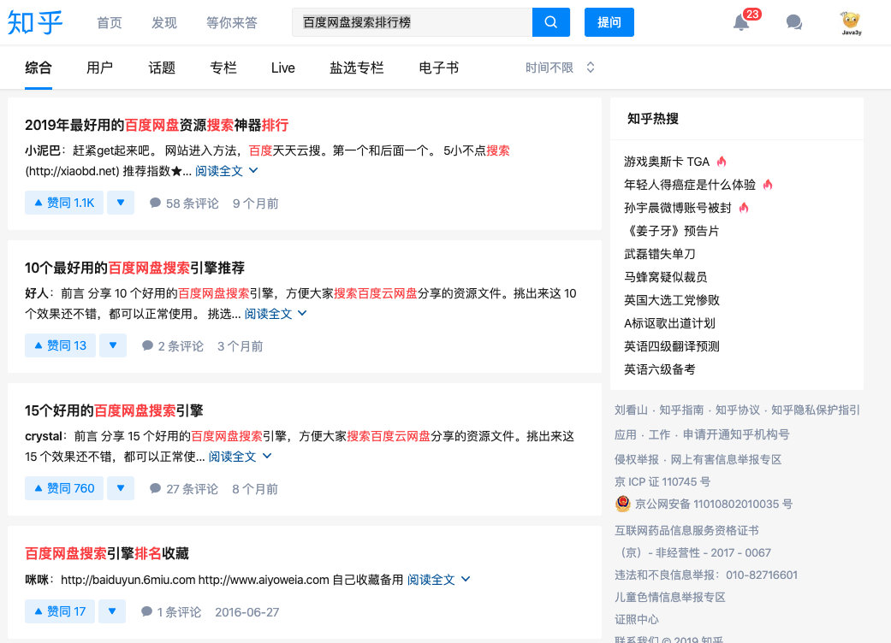
Q：还有其他吗？应该还有吧？我看你经常发我bilibili的视频
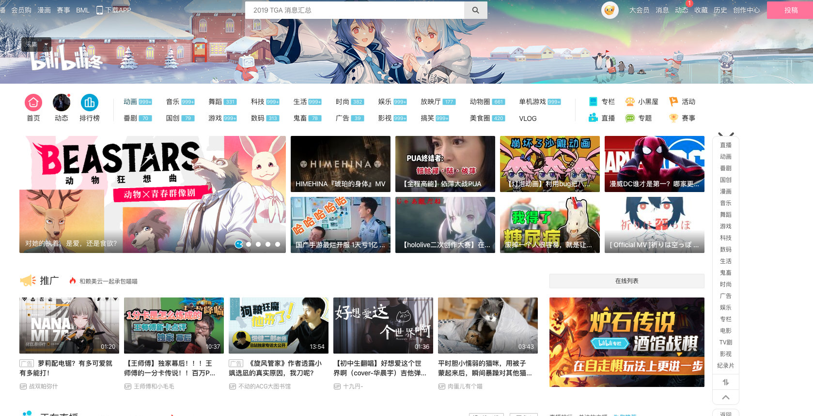
鸡蛋会分享一些有趣的视频给我，我本身也比较喜欢逛bilibili：

鸡蛋：bilibili是一个娱乐网站，不是学习的。
三歪：不是啊，bilibili也有很多的视频教程，基本国内的培训视频啥教程，那里面都有
鸡蛋：我学习一般不看视频，而且bilibili的视频讲解没有深度，它只教你会用。对了，我平时看youtobe比较多。
然后鸡蛋熟练的输入youtobe地址，在搜索框输入 java concurrency / golang concurrency ，展示了几个视频给我看，说道：“这些视频才有意思，都是顶级大佬讲的”
三歪：这些视频都是英文的，你平时用中文字幕还是纯英文字幕的啊？
鸡蛋：平时我会切到中文字幕的，但你不是还能听到吗。够用了
三歪：我之前也看过一些，要是纯用英文字幕，有的单词可能看不懂。要是纯用中文字幕，有的翻译又很怪。我英文水平还是差点意思。能不能设置双语？就是中文字幕和英文字幕一起都有
鸡蛋：那我就不知道了。
接着，鸡蛋返回了他的首页，给鸡蛋推荐的视频压根就不是学习类的，而是香港的一个综艺节目美女类的。话音未落，鸡蛋就点击去看了视频，并给我介绍道：“我平时很喜欢这个节目”
三歪：那首页都推荐给你了，当然知道你喜欢了。
鸡蛋：话说，你可以写写如何访问youtobe啊，这应该很多人都喜欢看
三歪：我写完，发出去，公众号可能就没了。
鸡蛋：还有就是 v2ex我也会经常看。
三歪：这个网站我听过，你一般会看哪些模块啊？
鸡蛋：我一般就看技术和工作那两个模块的多，还行。
Q:还有别的网站吗？再想想？
鸡蛋：前端的话，我看菜鸟教程也是挺多的，它里边的API介绍都挺全的。它那里边可以直接执行自己的代码，看到效果，我觉得还行。
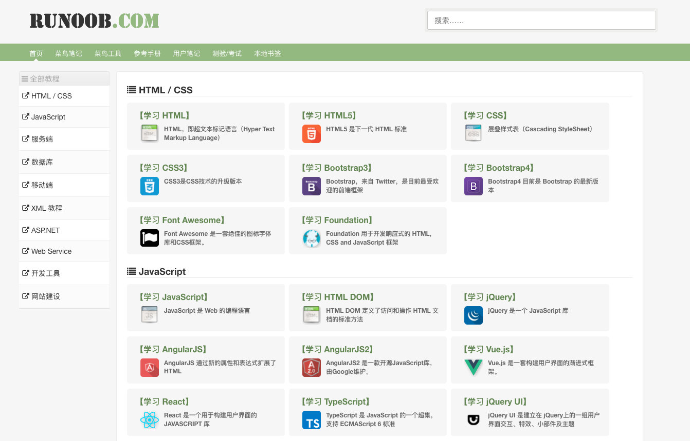
三歪注：鸡蛋一个人负责了10多个系统，这些系统什么技术栈都有，很多都是遗留下来的。可能前端用的Vue，也可能用的jQuery。在我们公司里，如果不是给用户使用的系统，很可能后端就把前端的给做了。而每个后端对前端技术栈的了解都不太一样，还是挺混乱的。
所以，不是前端后分离了，就一定不需要搞前端的东西了。很可能你接手了老系统呢？还在用JSP呢？
Q：还有吗还有吗？
鸡蛋：还有 stackoverflow吧，一般我在中文社区找不到解决办法的时候，会在stackoverflow里边找找。里边回答的也是顶级大牛。
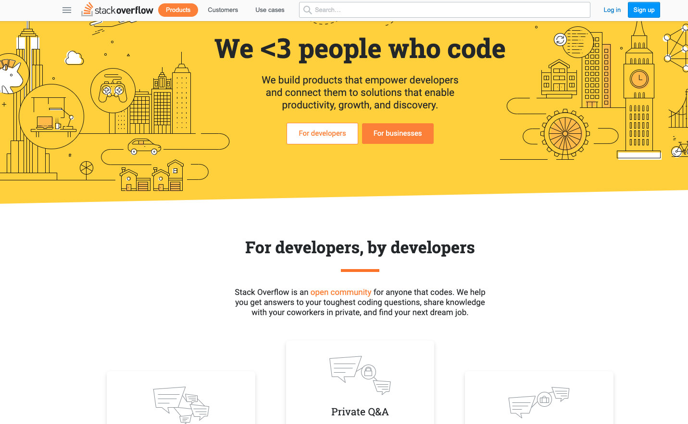
鸡蛋主动补充
鸡蛋：平时我还会去LeetCode和LintCode上刷题，我一般会针对题型来刷。
lintCode：
leetCode：
Q:还有吗？
鸡蛋：没有了，好像就这么多了吧？
敖丙：真的一滴都没有了
众人：哈哈哈哈
最后
最后总结一下鸡蛋给我说的网站（排名不分先后）：
- 电子书和资源查找：http://www.java1234.com/，还有各类的百度网盘搜索工具
- 程序员都知道的GitHub：https://github.com/
- 博客平台：https://segmentfault.com/
- 博客平台：https://juejin.im/timeline
- 菜鸟教程（前端）：https://www.runoob.com/
- 娱乐&学习网站：https://www.bilibili.com/
- v2ex（技术和工作）：https://www.v2ex.com/
- 查问题：https://stackoverflow.com/
- 科技新闻资讯类：https://36kr.com/
- 学习&娱乐：https://www.youtube.com/
- 刷题：https://leetcode.com/
- 刷题：https://www.lintcode.com/
鸡蛋是一个很有意思的人，技术水平很强。有空我多多分享鸡蛋的语录，哈哈哈~
关于我常用的工具（包括Chrome的一些插件）我之前已经写过了，有需要的朋友可以到我的GitHub or 公众号上去查阅
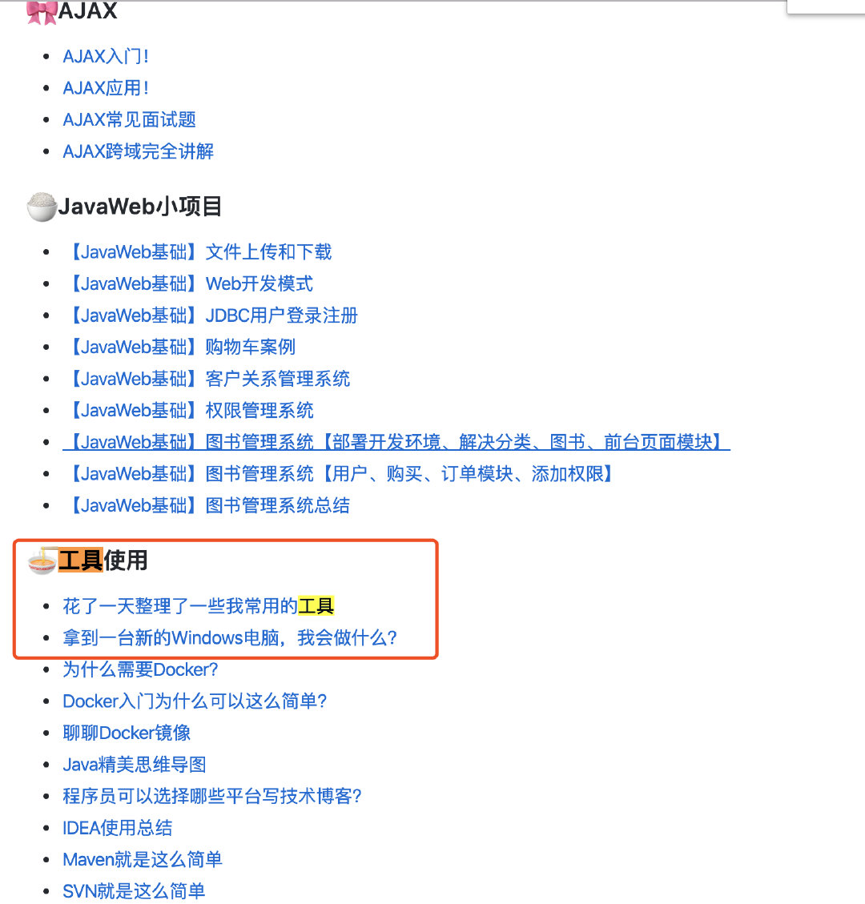
本已收录至我的GitHub精选文章，欢迎Star：https://github.com/ZhongFuCheng3y/3y
乐于输出干货的Java技术公众号：Java3y。公众号内有300多篇原创技术文章、海量视频资源、精美脑图，关注即可获取！

非常感谢人才们能看到这里，如果这个文章写得还不错，觉得「三歪」我有点东西的话 求点赞 求关注️ 求分享👥 求留言💬 对暖男我来说真的 非常有用！！！
创作不易，各位的支持和认可，就是我创作的最大动力，我们下篇文章见！